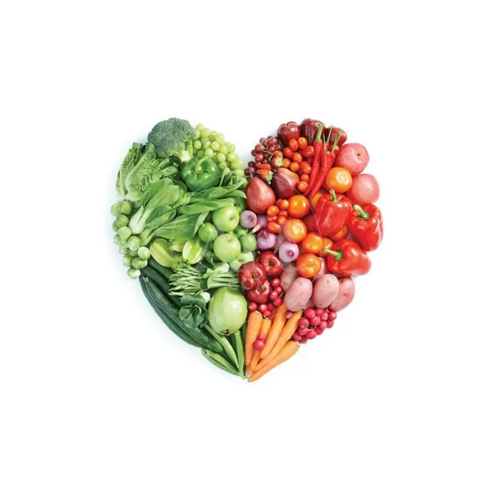

Responsive technique
viewport
css relative unit
Body max width and center align
image fluid
For two column flex use media query and flex direction column
For multi column use grid
Menu Responsive to use java script
